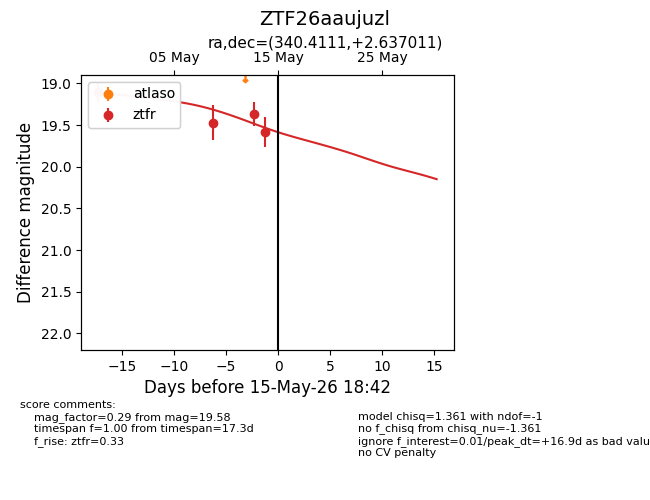
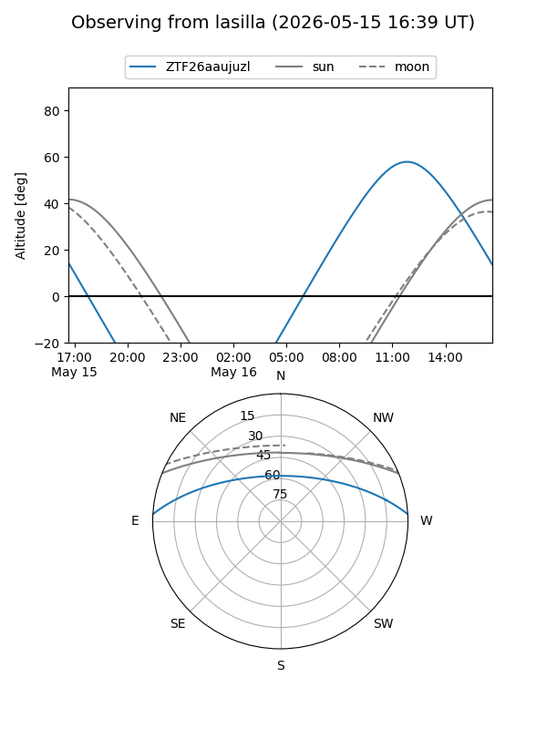
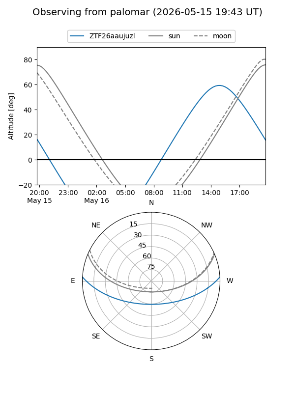
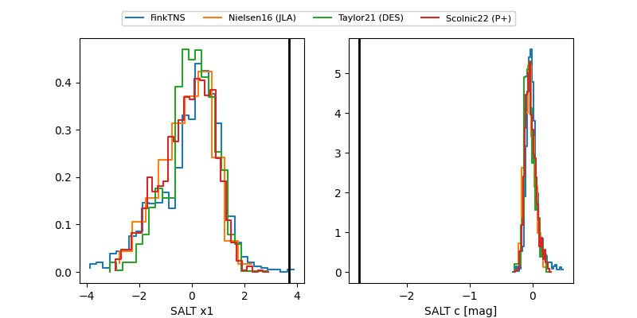

ZTF26aaujuzl
Target ZTF26aaujuzl at 2026-05-15 18:44
Aliases and brokers:
FINK: link
Lasair: link
ALeRCE: link
alt names
ZTF26aaujuzl (ztf,fink_ztf)
Coordinates:
equatorial (ra, dec) = 340.4111,+2.63701
equatorial (HMS+DMS) = 22:41:38.67,+02:38:13.24
galactic (l, b) = (71.3665,-46.82479)
Flags:
Photometry:
last ztfr=19.58
4 ztfr detections
Lightcurve

Visibility


Additional plots
